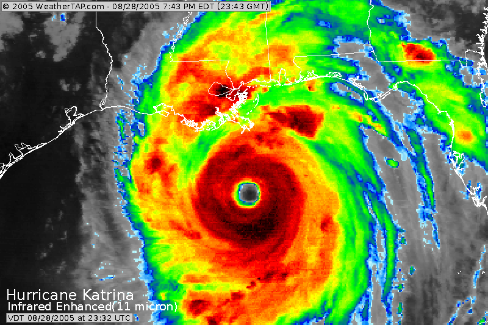

English 102
Writing with Sources

To follow along, load this in your browser: http://www.ryanpatrickrandall.com/talks/engl102.html
Created by Ryan P. Randall
Hello!
I'm Ryan Randall, from the Library!
I'm here to help you prepare for your next assignment. And the rest of your classes, to be honest.
We'll talk about the inquiry process and advanced searching.
What have you already done in the library?
- Printing?
- Used the textbooks on reserve?
- Used one of our many computers?
- Requested an article or book?
- Used the online chat?
- Used the anatomical models?
Here's some more library resources!
- Databases—including movies!
- Research Guides that help you know where to start!
- Schedule an Appointment with a Librarian—hey, it's free!
- Book a Group Study Room—we've got two of them!
Any questions so far?

The Information Life Cycle
You know that not every source the same.
So what makes sources different?
Hurricane Katrina: August 2005

Where do your sources go on our timeline?
SUNY Canton has a great chart on the different "Types of Information Sources".
History Doesn't Repeat, But It Echoes
Let's imagine you're researching a recent event.
- What does the information timeline say about the kinds of sources you could find?
- How could you use older sources to write about new events?
Let's watch UNLV's "Information Life Cycle" video!

The Seattle Community Colleges have a great description of the research process.
Here's the discovery and guided inquiry process as a compass.
What do these process circles tell us about the info life cycle?
Peer review? "Scholarly" articles?
Peer reviewed ≅ refereed
Let's watch a video from NCSU on peer review.
Scholarly articles
How can you spot a scholarly article?
- Abstract
- Author's credentials
- Keywords
- Specific topic
- Specialized vocabulary
- Structured format (this differs by field)
- References
Here's how an idea goes from a researcher to journal to a database.
Next-Level Research

Keywords
Remember GVRL!
Search Term Brainstorming
| Topic | Broader | Narrower | Related | Similar | |
|---|---|---|---|---|---|
| examples: | car | vehicle | Honda | automobile | truck |
How did this go? Let me know at http://bit.ly/cwilif!
Keep in touch with the CWI Library
Please schedule an appointment with a CWI Librarian if you'd like further research assistance.
You can also get help from the College of Western Idaho Libraries through our online chat, our FAQ pages, calling or texting us, and email!
Thank you for your time!
"Pulling a book off the shelf" photo by Bennington College's Crossett Library with a CC BY-NC-SA 2.0 license.
Blakeslee, S. (2004). The CRAAP test. LOEX Quarterly, 31(3), 6-7. Retrieved from http://commons.emich.edu/loexquarterly/vol31/iss3/4.
"Purpose" photo by Seth Sawyers with a CC BY 2.0 license and given some minimal filtering by Ryan.